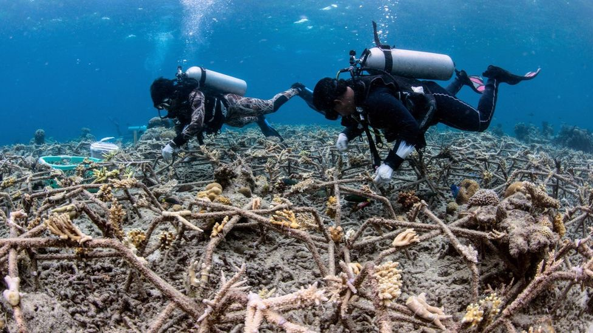

Latest News
Covid: Pfizer says booster shot promising against Omicron
Pfizer and BioNTech have said a booster jab of their coronavirus vaccine promises to be an effective defence against the new Omicron variant. Three doses provide a similar level of antibodies against Omicron to that of two doses with other variants, the companies said after a small study. The World Health Organization (WHO) earlier said vaccines should still work against severe Omicron cases. Researchers across the world are piecing together data about Omicron. It is the most heavily mutated version of coronavirus found so far. In a statement on Wednesday, Pfizer chief executive Albert Bourla said protection against the variant would be improved with a third dose of the jab.
Fish ‘whoops and growls’ recorded on restored reef
Scientists who "eavesdropped" on a restored coral reef in Indonesia say their recordings of fish "whooping, croaking and growling" are the reef coming back to life. Over a decade, the reef has been re-seeded with new corals. The researchers used underwater microphones to record at the site. The sounds, some of which have never been recorded before, provide an audible measure of the health of the reef, researchers say. They published their findings in the Journal of Applied Ecology.
